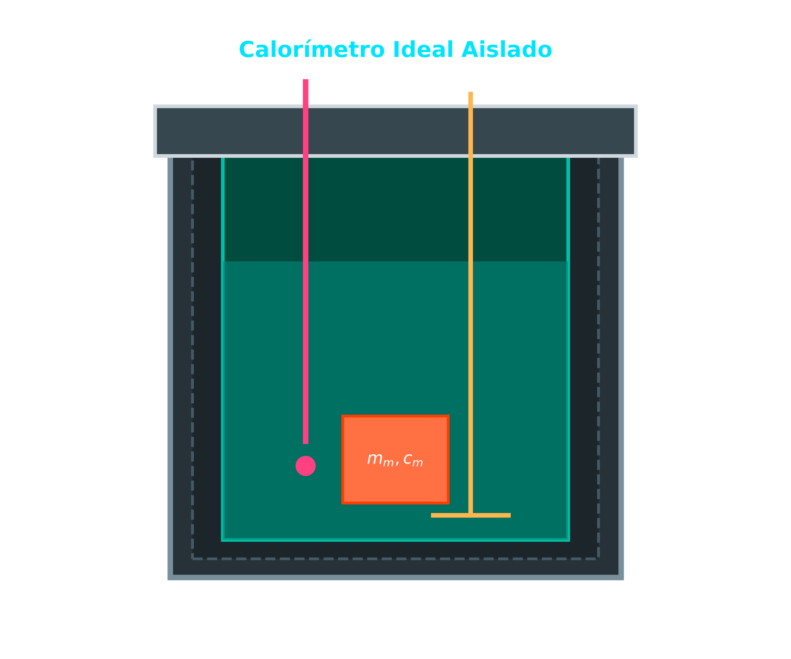
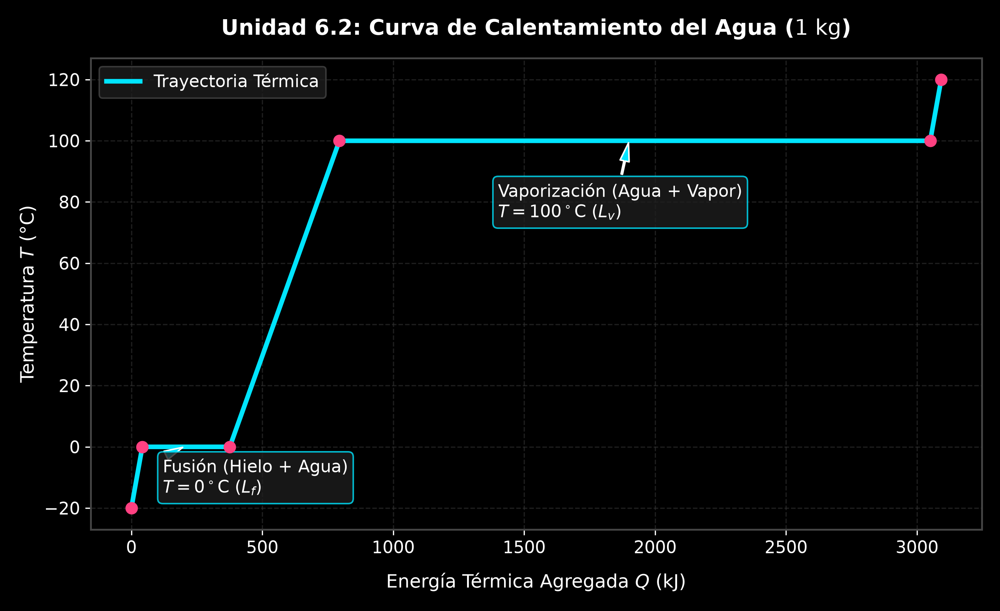
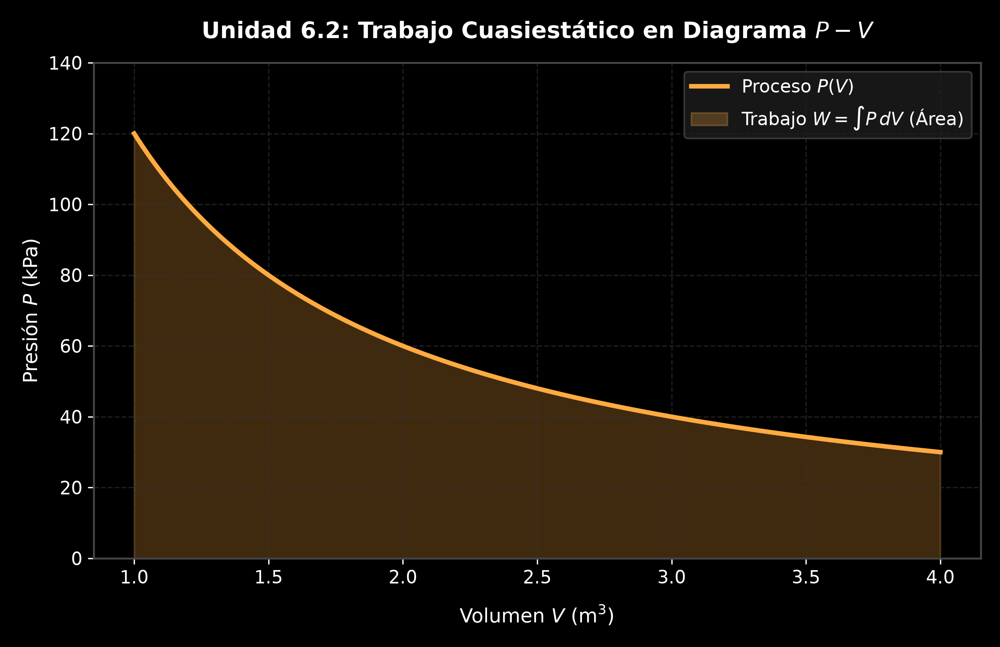
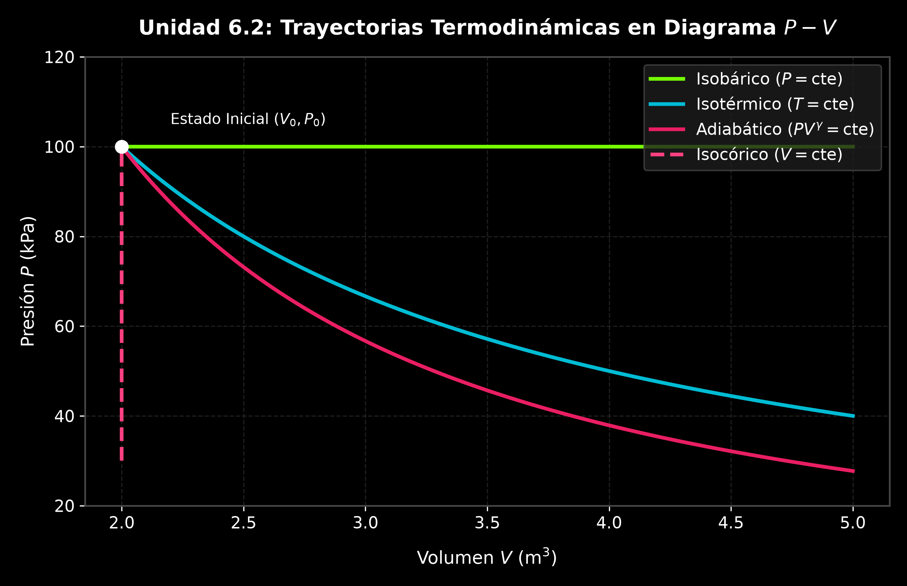
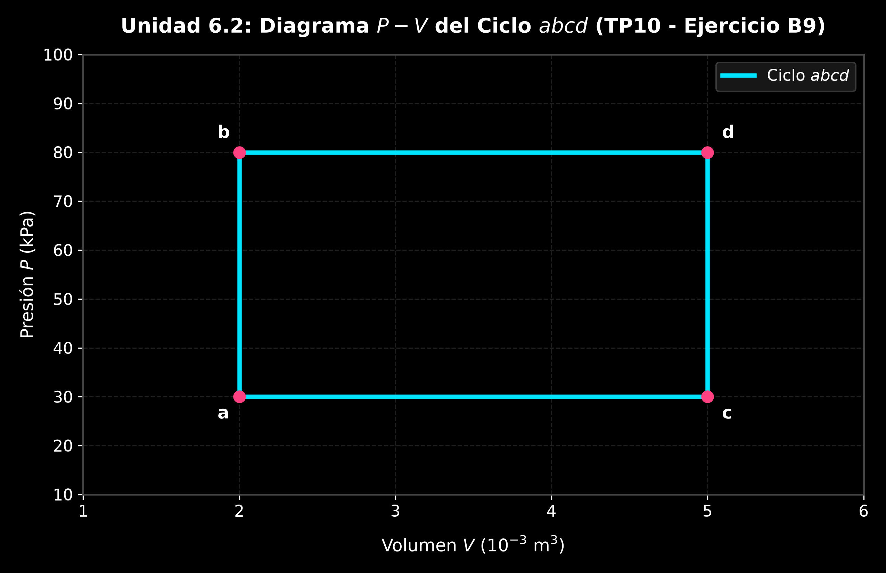
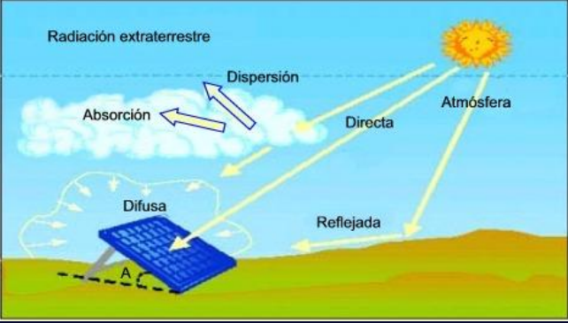

6.2 Calorimetría, Primera Ley de la Termodinámica y Transferencia de Calor
1. Calorimetría, Calor Sensible y Cambios de Fase
El calor (\(Q\)) es la energía en tránsito que se transfiere a través de la frontera de un sistema debido exclusivamente a una diferencia de temperatura entre el sistema y su entorno.

A. Calor Sensible y Capacidad Calorífica
Cuando se añade o extrae calor a una sustancia sin que esta cambie su estado de agregación, su temperatura varía de forma proporcional a la cantidad de energía transferida:
- \(Q\): Cantidad de calor transferido en Joules \([\text{J}]\) o calorías \([\text{cal}]\) (\(1\text{ cal} = 4.186\text{ J}\)).
- \(m\): Masa de la sustancia en \([\text{kg}]\) o \([\text{g}]\).
- \(c_e\): Calor específico, propiedad intensiva que indica la energía requerida para elevar \(1\text{ K}\) (o \(1^\circ\text{C}\)) la temperatura de \(1\text{ kg}\) de sustancia \([\text{J/(kg}\cdot\text{K)}]\).
- Si \(Q > 0\), el sistema absorbe calor (\(\Delta T > 0\)). Si \(Q < 0\), el sistema cede calor (\(\Delta T < 0\)).
graph TD
subgraph S_Calor["Tipos de Calor y Efectos Termodinámicos"]
Q["Energía Térmica en Tránsito (Q)"] --> QS["Calor Sensible<br>Q = m · c_e · ΔT"]
Q --> QL["Calor Latente<br>Q = ± m · L"]
QS --> EF_S["Produce Variación de Temperatura<br>(ΔT ≠ 0)"]
QS --> EF_S2["Sin cambio de estado de agregación"]
QL --> EF_L["Temperatura Constante<br>(ΔT = 0)"]
QL --> EF_L2["Cambio de Fase / Estado<br>(Fusión, Vaporización, etc.)"]
endB. Transiciones de Fase y Calor Latente
Durante un cambio de fase (sólido-líquido, líquido-gas), la energía transferida no incrementa la energía cinética media de las moléculas, sino que interviene en la formación o ruptura de enlaces intermoleculares. Por lo tanto, la temperatura permanece estrictamente constante durante todo el proceso de transición.
- \(L_f\): Calor latente de fusión (para agua: \(L_f = 3.34 \times 10^5\text{ J/kg} = 79.7\text{ cal/g}\)).
- \(L_v\): Calor latente de vaporización (para agua: \(L_v = 2.256 \times 10^6\text{ J/kg} = 539\text{ cal/g}\)).
- Signo \((+)\) si absorbe calor (fusión, vaporización); signo \((-)\) si cede calor (solidificación, condensación).

🛠️ Ejemplos Prácticos Aplicados:
1. Incremento de Temperatura Corporal por Fiebre (Ejemplo 17.6 Sears-Zemansky)
Enunciado: Un hombre de \(80\text{ kg}\) aquejado de gripe presenta una fiebre de \(39.0^\circ\text{C}\) en lugar de su temperatura normal de \(37.0^\circ\text{C}\). Suponiendo que el cuerpo humano está compuesto principalmente por agua (\(c_e \approx 4190\text{ J/(kg}\cdot\text{K)}\)), ¿cuánto calor se requirió para elevar su temperatura esa cantidad?
Resolución Analítica: $\(\Delta T = 39.0^\circ\text{C} - 37.0^\circ\text{C} = 2.0\text{ K}\)$ $\(Q = m c_e \Delta T = (80\text{ kg})(4190\text{ J/(kg}\cdot\text{K)})(2.0\text{ K}) = 6.704 \times 10^5\text{ J} = \mathbf{670.4\text{ kJ}} \quad (160\text{ kcal})\)$
2. Sobrecurso Térmico en Microelectrónica (Ejemplo 17.7 Sears-Zemansky)
Enunciado: Un elemento de circuito electrónico de silicio de \(m = 23\text{ mg}\) disipa energía a razón de \(P = 7.4\text{ mW} = 7.4 \times 10^{-3}\text{ J/s}\). Si no se contempla disipación de calor al exterior, ¿con qué rapidez aumentará su temperatura? (\(c_{e,\text{silicio}} = 705\text{ J/(kg}\cdot\text{K)}\)).
Resolución Analítica: Derivando la ecuación de calor sensible respecto al tiempo \(t\): $\(\frac{dQ}{dt} = P = m \cdot c_e \cdot \frac{dT}{dt} \implies \frac{dT}{dt} = \frac{P}{m \cdot c_e}\)$ $\(\frac{dT}{dt} = \frac{7.4 \times 10^{-3}\text{ J/s}}{(23 \times 10^{-6}\text{ kg})(705\text{ J/(kg}\cdot\text{K)})} = \mathbf{0.456\text{ K/s}} \quad (\approx 27.4^\circ\text{C/min})\)$
3. Calor Específico de una Barra de Plata (TP10 - Ejercicio B7)
Enunciado: La temperatura de una barra de plata de \(525\text{ g}\) aumenta \(10^\circ\text{C}\) cuando absorbe \(1.23\text{ kJ}\) de calor. Determine el calor específico de la plata.
Resolución Analítica: $\(c_e = \frac{Q}{m \cdot \Delta T} = \frac{1230\text{ J}}{(0.525\text{ kg})(10\text{ K})} = \mathbf{234.28\text{ J/(kg}\cdot\text{K)}}\)$
2. Conservación de Energía y Equilibrio Térmico en Calorímetros
En un sistema aislado de sus alrededores (calorímetro ideal), la cantidad total de calor absorbida por los componentes fríos debe ser exactamente igual a la cantidad de calor cedida por los componentes calientes:
🛠️ Ejemplos Prácticos Aplicados:
1. Enfriamiento de un Lingote Metálico (TP10 - Ejercicio B8 / Ejemplo 20.2 Serway)
Enunciado: Un lingote metálico de \(0.100\text{ kg}\) a \(100^\circ\text{C}\) (\(212^\circ\text{F}\)) se coloca en un calorímetro de aluminio de \(0.200\text{ kg}\) que contiene \(0.500\text{ kg}\) de agua a \(20.0^\circ\text{C}\). La temperatura final de equilibrio es \(21.4^\circ\text{C}\). Determine el calor específico del metal (\(c_{e,\text{agua}} = 4186\text{ J/(kg}\cdot\text{K)}\), \(c_{e,\text{Al}} = 900\text{ J/(kg}\cdot\text{K)}\)).
Resolución Analítica: 1. Balance de calor: $\(Q_{\text{metal}} + Q_{\text{agua}} + Q_{\text{calorímetro}} = 0\)$ 2. Sustitución de expresiones: $\(m_m c_m (T_f - T_{m0}) + m_w c_w (T_f - T_{w0}) + m_{\text{Al}} c_{\text{Al}} (T_f - T_{w0}) = 0\)$ $\((0.100) c_m (21.4 - 100) + (0.500)(4186)(21.4 - 20.0) + (0.200)(900)(21.4 - 20.0) = 0\)$ $\(-7.86 \cdot c_m + 2930.2 + 252.0 = 0 \implies 7.86 \cdot c_m = 3182.2\)$ $\(c_m = \frac{3182.2}{7.86} = \mathbf{404.86\text{ J/(kg}\cdot\text{K)}}\)$ (Correspondiente a una aleación de latón/cobre).
2. Calorimetría con Cambio de Fase: Vapor Inyectado en Agua (Ejemplo 20.4 Serway)
Enunciado: ¿Qué masa de vapor de agua \(m_v\) inicialmente a \(130^\circ\text{C}\) se necesita inyectar para calentar \(200\text{ g}\) de agua en un recipiente de vidrio de \(100\text{ g}\) de \(20.0^\circ\text{C}\) a \(50.0^\circ\text{C}\)? (\(c_{e,\text{vapor}} = 2010\text{ J/(kg}\cdot\text{K)}\), \(L_v = 2.26 \times 10^6\text{ J/kg}\), \(c_{e,\text{vidrio}} = 837\text{ J/(kg}\cdot\text{K)}\)).
Resolución Analítica: 1. Calor absorbido por agua fría y vidrio: $\(Q_{\text{frio}} = (0.200)(4186)(50 - 20) + (0.100)(837)(50 - 20) = 25116 + 2511 = 27627\text{ J}\)$ 2. Calor cedido por el vapor (3 etapas): * Enfriamiento del vapor (\(130^\circ\text{C} \rightarrow 100^\circ\text{C}\)): \(Q_1 = m_v (2010)(-30) = -60300 \cdot m_v\) * Condensación a \(100^\circ\text{C}\): \(Q_2 = -m_v (2.26 \times 10^6) = -2260000 \cdot m_v\) * Enfriamiento del agua condensada (\(100^\circ\text{C} \rightarrow 50^\circ\text{C}\)): \(Q_3 = m_v (4186)(-50) = -209300 \cdot m_v\) * \(Q_{\text{cedido}} = -m_v (60300 + 2260000 + 209300) = -2.5296 \times 10^6 \cdot m_v\) 3. Igualación: $\(27627 = 2.5296 \times 10^6 \cdot m_v \implies m_v = \mathbf{0.01092\text{ kg} = 10.92\text{ g}}\)$
3. Primera Ley de la Termodinámica y Trabajo de Expansión
La Primera Ley de la Termodinámica es el principio universal de conservación de la energía aplicado a sistemas térmicos:
- \(\Delta U = U_f - U_0\): Cambio en la energía interna del sistema (función de estado), en Joules \([\text{J}]\).
- \(Q\): Calor neto transferido hacia el sistema (positivo si entra, negativo si sale).
- \(W\): Trabajo neto realizado por el sistema sobre sus alrededores (positivo en expansión, negativo en compresión).
A. Trabajo Cuasiestático de Expansión/Compresión
El trabajo realizado por un fluido al desplazar un pistón con fuerza \(F = P \cdot A\) una distancia infinitesimal \(dx\) es:
Geométricamente, el trabajo \(W\) equivale al área bajo la curva del proceso en un diagrama \(P-V\). Dado que el trabajo depende de la trayectoria seguida entre los estados inicial y final, \(W\) y \(Q\) no son funciones de estado.

4. Procesos Termodinámicos Particulares y Ciclos
graph TD
subgraph S_Procesos["Resumen de Procesos Termodinámicos (1° Ley: ΔU = Q - W)"]
Isobarico["Proceso Isobárico<br>(P = constante)"] --> W_Isobar["W = P · ΔV<br>Q = n · C_p · ΔT"]
Isocorico["Proceso Isocórico<br>(V = constante)"] --> W_Isocor["W = 0<br>ΔU = Q = n · C_v · ΔT"]
Isotermico["Proceso Isotérmico<br>(T = constante)"] --> W_Isoterm["ΔU = 0<br>Q = W = nRT ln(V_f / V_i)"]
Adiabatico["Proceso Adiabático<br>(Q = 0)"] --> W_Adiab["Q = 0<br>ΔU = -W<br>P · V^γ = constante"]
end-
Proceso Isobárico (\(P = \text{constante}\)): $\(W = P (V_f - V_i) = P \Delta V\)$ $\(Q = n \cdot C_p \cdot \Delta T\)$ $\(\Delta U = n \cdot C_v \cdot \Delta T\)$
-
Proceso Isocórico o Isovolumétrico (\(V = \text{constante}\)): $\(W = 0 \implies \Delta U = Q = n \cdot C_v \cdot \Delta T\)$
-
Proceso Isotérmico (\(T = \text{constante}\)): Para un gas ideal, al no variar la temperatura, \(\Delta U = 0\): $\(Q = W = n R T \ln \left(\frac{V_f}{V_i}\right) = n R T \ln \left(\frac{P_i}{P_f}\right)\)$
-
Proceso Adiabático (\(Q = 0\)): Sin intercambio de calor con el entorno: $\(\Delta U = -W \implies P \cdot V^\gamma = \text{constante}, \quad T \cdot V^{\gamma-1} = \text{constante}\)$ $\(W = \frac{P_i V_i - P_f V_f}{\gamma - 1} = \frac{n R (T_i - T_f)}{\gamma - 1}\)$
- Dónde \(\gamma = \frac{C_p}{C_v}\) es el coeficiente de expansión adiabática (\(\gamma \approx 1.67\) monoatómico, \(\gamma \approx 1.40\) diatómico).

🛠️ Ejemplos Prácticos Aplicados:
1. Expansión Isobárica de Oxígeno en Cilindro con Pistón (TP10 - Ejercicio B9)
Enunciado: Un cilindro contiene \(1.00\text{ mol}\) de oxígeno (\(\text{O}_2\), gas diatómico \(C_v = \frac{5}{2}R\), \(C_p = \frac{7}{2}R\)) a \(T_1 = 27^\circ\text{C} = 300.15\text{ K}\) sujeto a una presión constante de \(1.00\text{ atm} = 101.325\text{ kPa}\). Se calienta hasta \(T_2 = 127^\circ\text{C} = 400.15\text{ K}\). a) Calcule el trabajo realizado por el gas. b) Calcule la variación de energía interna. c) Calcule el calor suministrado.
Resolución Analítica: $\(\Delta T = 400.15 - 300.15 = 100.0\text{ K}\)$ * Parte a) Trabajo \(W\): $\(W = P \Delta V = n R \Delta T = (1.00\text{ mol})(8.3145\text{ J/(mol}\cdot\text{K)})(100.0\text{ K}) = \mathbf{831.45\text{ J}}\)$ * Parte b) Energía interna \(\Delta U\): $\(\Delta U = n C_v \Delta T = n \left(\frac{5}{2}R\right) \Delta T = \frac{5}{2} (831.45\text{ J}) = \mathbf{2078.63\text{ J}}\)$ * Parte c) Calor suministrado \(Q\): $\(Q = \Delta U + W = 2078.63 + 831.45 = \mathbf{2910.08\text{ J}} \quad \left(Q = n C_p \Delta T = \frac{7}{2} (831.45) = 2910.08\text{ J}\right)\)$
2. Análisis Comparativo de Ciclo Termodinámico (Ejemplo 19.4 Sears / TP10)
Enunciado: En la gráfica \(P-V\) del ciclo \(abcd\), se agregan \(150\text{ J}\) de calor en el proceso \(ab\) y \(600\text{ J}\) en el proceso \(bd\). Los estados son \(P_a = P_c = 3.0 \times 10^4\text{ Pa}\), \(P_b = P_d = 8.0 \times 10^4\text{ Pa}\), \(V_a = V_b = 2.0 \times 10^{-3}\text{ m}^3\), \(V_c = V_d = 5.0 \times 10^{-3}\text{ m}^3\). Calcule: a) \(\Delta U_{ab}\), b) \(\Delta U_{abd}\) y c) El calor total \(Q_{acd}\).

Resolución Analítica: * Parte a) Proceso \(ab\) (Isocórico, \(V_a = V_b\)): $\(W_{ab} = 0 \implies \Delta U_{ab} = Q_{ab} = \mathbf{150\text{ J}}\)$ * Parte b) Proceso \(abd\): * Trabajo en \(bd\) (Isobárico a \(8.0 \times 10^4\text{ Pa}\)): $\(W_{bd} = P_b (V_d - V_b) = (8.0 \times 10^4\text{ Pa})(5.0 \times 10^{-3} - 2.0 \times 10^{-3}\text{ m}^3) = 240\text{ J}\)$ * Trabajo total \(W_{abd} = W_{ab} + W_{bd} = 0 + 240 = 240\text{ J}\). * Calor total \(Q_{abd} = Q_{ab} + Q_{bd} = 150 + 600 = 750\text{ J}\). * Energía interna: \(\Delta U_{abd} = Q_{abd} - W_{abd} = 750 - 240 = \mathbf{510\text{ J}}\). * Parte c) Trayectoria \(acd\): * Al ser la energía interna una función de estado: \(\Delta U_{acd} = \Delta U_{abd} = 510\text{ J}\). * Trabajo en \(ac\) (Isobárico a \(3.0 \times 10^4\text{ Pa}\)): $\(W_{ac} = P_a (V_c - V_a) = (3.0 \times 10^4\text{ Pa})(3.0 \times 10^{-3}\text{ m}^3) = 90\text{ J}\)$ * Trabajo en \(cd\) (Isocórico): \(W_{cd} = 0 \implies W_{acd} = 90\text{ J}\). * Calor total: \(Q_{acd} = \Delta U_{acd} + W_{acd} = 510 + 90 = \mathbf{600\text{ J}}\).
5. Mecanismos de Transferencia de Calor y Aplicaciones Técnicas
La transferencia de calor ocurre a través de tres mecanismos físicos fundamentales:
A. Conducción Térmica
Transmisión de energía a nivel atómico en sólidos por gradiente de temperatura sin transporte de materia. Rigida por la Ley de Fourier:
- \(H\): Corriente de calor o flujo térmico \([\text{J/s}]\) o \([\text{W}]\).
- \(k\): Conductividad térmica del material \([\text{W/(m}\cdot\text{K)}]\).
- \(A\): Área transversal perpendicular al flujo \([\text{m}^2]\).
- \(L\): Espesor del conductor \([\text{m}]\).
B. Convection
Mecanismo propio de fluidos (líquidos y gases) donde el calor se transporta mediante el movimiento macroscópico de masa debido a diferencias de densidad creadas por gradientes de temperatura (convección natural o forzada).

C. Radiación Térmica
Emisión continua de energía en forma de ondas electromagnéticas por todo cuerpo debido a su temperatura. Descrita por la Ley de Stefan-Boltzmann:
- \(\sigma = 5.6704 \times 10^{-8}\text{ W/(m}^2\cdot\text{K}^4\text{)}\): Constante de Stefan-Boltzmann.
- \(e\): Emisividad de la superficie (\(0 \le e \le 1\)).

{: style="display: block; margin: 0 auto; max-width: 80%; height: auto;" }6. Trabajo Práctico Integrador de Cierre de la Materia
📋 Enunciado del Problema Complejo (Tipo Examen Parcial)
Un sistema termodinámico compuesto por \(n = 1.50\text{ moles}\) de un gas ideal monoatómico (\(C_v = \frac{3}{2}R\), \(C_p = \frac{5}{2}R\)) parte de un estado inicial \(A\) con \(P_A = 100\text{ kPa}\) y \(V_A = 0.020\text{ m}^3\). El gas recorre un ciclo termodinámico cerrado \(A \rightarrow B \rightarrow C \rightarrow A\): 1. Etapa \(A \rightarrow B\): Expansión isobárica a \(100\text{ kPa}\) hasta duplicar su volumen (\(V_B = 0.040\text{ m}^3\)). 2. Etapa \(B \rightarrow C\): Enfriamiento isocórico hasta reducir su presión a la mitad (\(P_C = 50\text{ kPa}\)). 3. Etapa \(C \rightarrow A\): Compresión siguiendo una trayectoria en línea recta en el plano \(P-V\) hasta retornar al estado inicial \(A\).
Se solicita: 1. Calcular las temperaturas absolutas \(T_A\), \(T_B\) y \(T_C\). 2. Calcular \(W\), \(\Delta U\) y \(Q\) para cada una de las 3 etapas y para el ciclo completo. 3. Si la cantidad de calor cedida por el gas en la etapa \(B \rightarrow C\) se aprovecha en un calorímetro aislado para fundir un bloque de hielo a \(0^\circ\text{C}\) (\(L_f = 3.34 \times 10^5\text{ J/kg}\)), determine qué masa de hielo \(m_{\text{hielo}}\) se logrará derretir.
📐 Resolución Analítica Paso a Paso
Paso 1: Cálculo de Temperaturas en los Nodos del Ciclo
- Estado A: $\(T_A = \frac{P_A V_A}{n R} = \frac{(100 \times 10^3\text{ Pa})(0.020\text{ m}^3)}{(1.50\text{ mol})(8.3145\text{ J/(mol}\cdot\text{K)})} = \mathbf{160.37\text{ K}}\)$
- Estado B (\(V_B = 2 V_A = 0.040\text{ m}^3\), \(P_B = P_A\)): $\(T_B = \frac{P_B V_B}{n R} = 2 \cdot T_A = \mathbf{320.74\text{ K}}\)$
- Estado C (\(V_C = V_B = 0.040\text{ m}^3\), \(P_C = 0.5 P_B = 50\text{ kPa}\)): $\(T_C = \frac{P_C V_C}{n R} = \frac{(50 \times 10^3\text{ Pa})(0.040\text{ m}^3)}{(1.50)(8.3145)} = \mathbf{160.37\text{ K}} \quad (T_C = T_A)\)$
Paso 2: Balance Energético por Etapas
- Etapa \(A \rightarrow B\) (Isobárica):
- \(W_{AB} = P_A (V_B - V_A) = (100 \times 10^3\text{ Pa})(0.040 - 0.020\text{ m}^3) = \mathbf{2000.0\text{ J}}\)
- \(\Delta U_{AB} = n C_v (T_B - T_A) = (1.50) \left(\frac{3}{2} \cdot 8.3145\right) (320.74 - 160.37) = \mathbf{3000.0\text{ J}}\)
-
\(Q_{AB} = \Delta U_{AB} + W_{AB} = 3000 + 2000 = \mathbf{5000.0\text{ J}}\)
-
Etapa \(B \rightarrow C\) (Isocórica):
- \(W_{BC} = \mathbf{0\text{ J}}\)
- \(\Delta U_{BC} = n C_v (T_C - T_B) = (1.50) \left(\frac{3}{2} \cdot 8.3145\right) (160.37 - 320.74) = \mathbf{-3000.0\text{ J}}\)
-
\(Q_{BC} = \Delta U_{BC} = \mathbf{-3000.0\text{ J}}\) (El gas cede \(3000\text{ J}\) de calor)
-
Etapa \(C \rightarrow A\) (Compresión Lineal en \(P-V\)):
- Como \(T_A = T_C\), el cambio de energía interna es nulo: \(\Delta U_{CA} = \mathbf{0\text{ J}}\).
- Trabajo \(W_{CA}\) = Área del trapecio bajo la recta en \(P-V\) (con signo negativo por compresión): $\(W_{CA} = -\frac{P_C + P_A}{2} (V_C - V_A) = -\frac{50 \times 10^3 + 100 \times 10^3}{2} (0.040 - 0.020) = \mathbf{-1500.0\text{ J}}\)$
-
\(Q_{CA} = \Delta U_{CA} + W_{CA} = 0 - 1500 = \mathbf{-1500.0\text{ J}}\)
-
Neto del Ciclo Completo:
- \(W_{\text{neto}} = W_{AB} + W_{BC} + W_{CA} = 2000 + 0 - 1500 = \mathbf{500.0\text{ J}}\)
- \(\Delta U_{\text{neto}} = 3000 - 3000 + 0 = \mathbf{0\text{ J}}\)
- \(Q_{\text{neto}} = 5000 - 3000 - 1500 = \mathbf{500.0\text{ J}}\)
Paso 3: Aplicación Calorimétrica con el Calor Cedido
El calor cedido por el gas en la etapa \(B \rightarrow C\) es \(|Q_{BC}| = 3000\text{ J}\). Igualando a la ecuación de fusión del hielo a \(0^\circ\text{C}\):